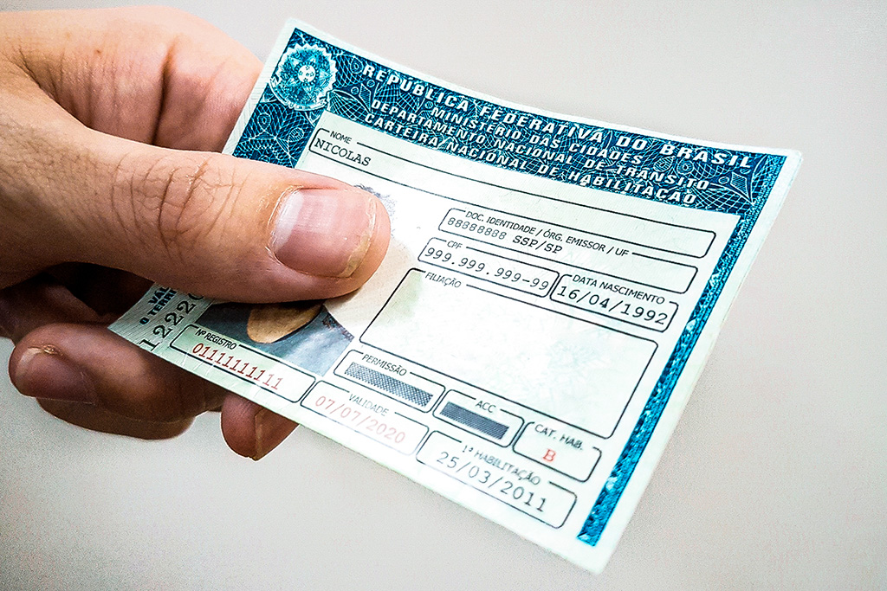

Noticias Cidades
Destaque
Nova lei de trânsito já está valendo, veja as mudanças

A Lei 14.071 / 20, que altera alguns pontos da legislação de trânsito brasileira, já está valendo. Desde a aquisição da CNH, até a obrigatoriedade do uso da cadeirinha serão afetados pela nova medida, aprovada desde setembro de 2020, que está em vigor desde o dia 12/04/2021.
Em geral, todos os motoristas serão afetados pelas novas medidas.São cerca de 57 mudanças, incluindo a nova validade da CNH, novas pontuações, o uso de farol baixo nas rodovias e vamos te mostrar nesse artigo algumas dessas alterações
Alterações no CTB
Conforme Lei da Lei (PL) 14.071 / 20, a Lei foi promulgada em outubro de 2020 e entrou em vigor em 12 de abril de 2021. A nova lei mudou parte do texto do CTB em vigor desde 1996.
Isso quer dizer que agora os condutores precisam seguir as novas regras em vigência desde 12/04/2021.
Resumindo, algumas regras antigas tornaram-se mais brandas, como o problema de pontos no CNH. Essa já é uma demanda antiga de motoristas profissionais.
Por outro lado, o período de utilização obrigatória das cadeirinhas para crianças é de 7 a 10 anos e os condutores transportando crianças de forma errada serão multados de forma gravíssima.
Nova validade da CNH
Confira o novo prazo de vencimento para renovação da CNH:
- Dez anos de validade: Motoristas com até 50 anos de idade deverão renovar a CNH a cada 10 anos;
- Cinco anos de validade: Motoristas com idade entre 50 e 70 anos precisarão renovar a CNH a cada 5 anos;
- Três anos de validade: Motoristas acima dos 70 anos deverão renovar a CNH a cada 3 anos.
Ressaltando que os novos prazos tem validade a partir da data da próxima renovação, isso quer dizer que, caso você tenha 30 anos e sua carteira de habilitação tenha vencimento para 2021, o ano do vencimento não é alterado, porém o novo prazo de 10 anos valerá a partir da próxima vez em que sua carteira for renovada.
Porte da habilitação
As alterações na Lei De Trânsito também mudam a regra da obrigatoriedade do documento que certifica o direito de dirigir do condutor. Desde a vigência das modificações, o porte de CNH está dispensado, desde que a fiscalização consiga através de verificação do sistema, comprovar que o motorista é habilitado e está com o documento em dia.
Limite de pontos
Houve uma mudança significativa relacionadas a pontuação da sua CNH.
Uma das principais alterações está relacionada aos ponto da carteira de habilitação, onde o motorista pode atingir até 40 pontos, sem perder o direito de dirigir, entretanto existem novas regras, confira como ficou:
- 20 pontos: Permanecerá 20 pontos para os motoristas que tiverem duas ou mais infrações gravíssimas;
- 30 pontos: Os motoristas poderão acumular até 30 pontos se tiverem apenas uma infração gravíssima;
- 40 pontos: Os motoristas poderão acumular até 40 pontos caso não tenham nenhuma infração gravíssima.
No caso de suspensão direta, a pena pode variar de dois meses a oito meses e, caso volte a ocorrer, de oito meses a dezoito meses.
Para motoristas profissionais, a regra de 40 pontos se aplica independentemente da violação. Há muitos anos que os caminhoneiros pedem essa mudança.
O processo de obtenção de CNH
As aulas noturnas não são mais necessárias. Essa lei revoga o art. 158, § 2º do CTB, que dizia que parte das aulas realizadas pelos aprendizes precisavam ser obrigatoriamente feitas durante a noite.
Por fim, a nova lei também revoga o Art.151 do CTB, o candidato não precisa mais aguardar o prazo de reprovação em exame teórico e prático para obter a CNH.